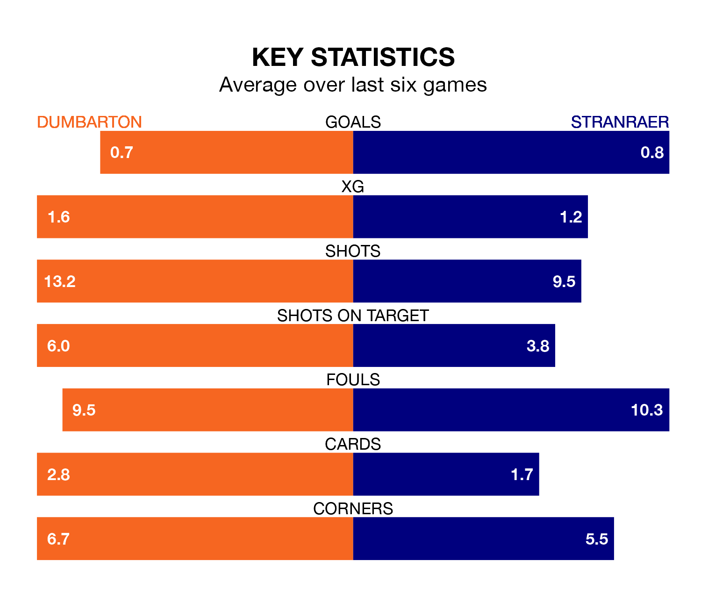

Struggling Dumbarton face Stranraer at the moreroom.com Stadium on Saturday looking to build on a win in their last league outing.
After securing all three points with a 0-2 victory over Clyde on February 17, the Sons sit fourth in League Two.
They travel to play a Stranraer side ninth in the standings, who lost in their last match, 2-1 against Spartans.
With 27 goals in 24 games so far this season, Stranraer are scoring at below the league average rate with 1.1 goals per game. And they are conceding more than average, letting in 41 goals at a rate of 1.7 per game.
Dumbarton, meanwhile, are above average scorers, with 1.5 goals per game, compared to a league average of 1.3. They have conceded 1.2 goals per game.
In the last 10 years, Dumbarton and Stranraer have played each other on 17 occasions. Dumbarton won eight of them, Stranraer five, and they drew four times.
On average, the Sons scored 1.5 goals and Stranraer 1.0 in those matches.
Their last meeting was on September 30, when Dumbarton won 3-1 at home.
With Brett Long between the sticks, the Sons can rely on one of the league's safest pair of hands. He has kept five clean sheets in his 14 appearances this season in League Two.
In the away side's net, Lewis Budinauckas has three clean sheets in 17 games. He has conceded a goal every 57 minutes, more than twice as often as the 126 minutes between goals for Long.
The hosts are in disappointing form in League Two, with one win and three draws from their last six games.
With two wins and a draw over that period, Stranraer's form is slightly better – they have taken seven points from 18, compared to Dumbarton's six.
Updated: 12:18 (UTC), 19/02/24